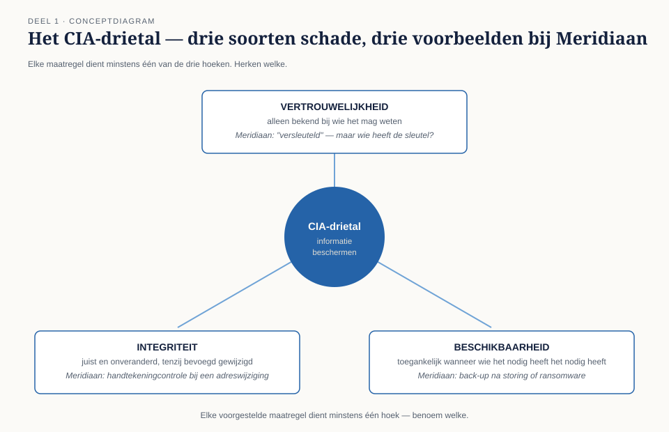
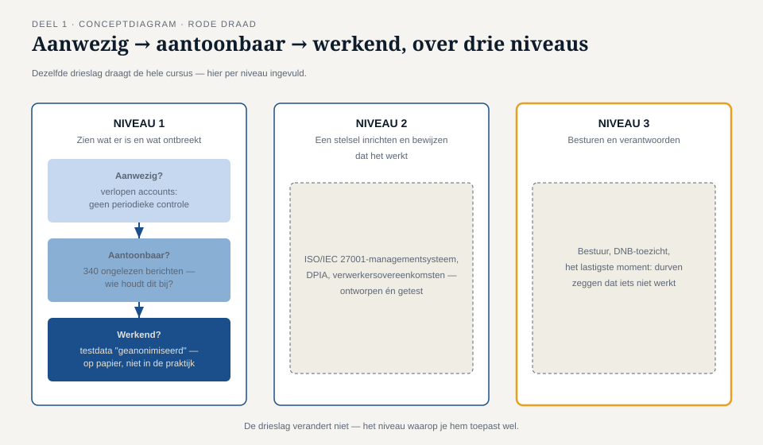

Deel 1 — Waarom beveiliging en privacy één vak zijn en toch twee disciplines
Slidedeck · Ductus-cursus Informatiebeveiliging en privacy · niveau 1 · deel 1 van 10 · 24 slides
Slide 1 — Titel
Informatiebeveiliging en Privacy
Deel 1 · Niveau 1 · Fundament
Waarom beveiliging en privacy één vak zijn en toch twee disciplines
Slide 2 — Merels eerste week
Maandag. Eerste information security officer ooit bij Meridiaan Pensioen.
Wat ze in vijf dagen aantreft:
- Verlopen accounts sinds 2019
- Drie testomgevingen met productiedata
- Een beveiligingsmailbox met 340 ongelezen berichten
- Een FG die meteen haar grens trekt: "Ik moet onafhankelijk van jou kunnen blijven controleren"
Spreker: vertel dit als verhaal, niet als lijstje.
Slide 3 — Waar begin je?
Niet bij een tool. Niet bij een norm.
Bij een onderscheid dat de hele cursus draagt.

Slide 4 — Informatiebeveiliging: CIA
- Confidentiality — vertrouwelijkheid
- Integrity — integriteit
- Availability — beschikbaarheid
Elke maatregel dient minstens één van de drie.
Slide 5 — CIA toegepast
| Maatregel | Dient... |
|---|---|
| Back-up | Beschikbaarheid |
| Handtekeningcontrole | Integriteit |
| Versleuteling | Vertrouwelijkheid |
Jouw vak: benoemen welke van de drie een maatregel écht dient.
Slide 6 — Opdracht 1.1
CIA op Merels eerste week.
Ken per situatie toe: welk deel van CIA is primair in het geding?
(pauzeer hier voor de opdracht)
Slide 7 — Privacy is iets anders
Niet CIA. Rechtmatigheid.
Een organisatie kan een persoonsgegeven perfect beveiligen
en het toch onrechtmatig verwerken.
Slide 8 — Voorbeeld
Werkgever versleutelt ziekteverzuimgegevens feilloos.
Deelt ze zonder grondslag met een verzekeraar.
Niets onveilig. Alles onrechtmatig.
Slide 9 — Twee mensen, twee vakken
Merel vraagt: zijn de gegevens veilig?
Sanne vraagt: mogen ze hier überhaupt liggen?
Slide 10 — Waar de disciplines samenkomen

Grote overlap — elke AVG-maatregel is ook een beveiligingsmaatregel.
Maar niet volledig.
Slide 11 — Drie zones
| Beveiliging zonder privacy | Privacy zonder beveiligingsprobleem | |
|---|---|---|
| Voorbeeld | Bedrijfsgeheim lekt | Grondslag ontbreekt, data wel veilig |
| Wie signaleert | Beveiligingsfunctie | Privacyfunctie |
Slide 12 — De derde zone: spanning
Meer beveiliging is niet automatisch beter voor privacy.
Extreem uitgebreide logging: uitstekend voor forensisch onderzoek,
zwaar ingrijpend voor de medewerker.
(Vooruitwijzing naar deel 15 — privacy by design als ontwerpeis naast security by design.)
Slide 13 — Opdracht 1.2
Zes situaties. Beveiliging, privacy, allebei, of geen van beide?
(groepjes van 2-3, bespreek situatie 3 en 5 extra grondig)
PAUZE
Slide 14 — Waarom Merel Sannes werk niet mag doen
Als dezelfde persoon bouwt én controleert: belangenconflict.
De FG heeft een wettelijk beschermde onafhankelijke positie.
(Vooruitwijzing naar deel 4: three lines of defence.)
Slide 15 — Opdracht 1.3
Wat zou er misgaan als Merel en Sanne dezelfde persoon waren?
Slide 16 — De rode draad van de hele cursus
Aanwezig is niet hetzelfde als aantoonbaar, en aantoonbaar is niet hetzelfde als werkend.

Slide 17 — Drieslag op Merels casus
- Verlopen accounts: niet eens aanwezig als beheerst proces
- Testdata-beleid: misschien aanwezig, duidelijk niet werkend
- Meldkanaal: aanwezig, niet aantoonbaar functionerend
Slide 18 — Drie niveaus, één drieslag
| Niveau | Vraag |
|---|---|
| 1 — Fundament | Wat is er, wat ontbreekt? |
| 2 — Professional | Inrichten en bewijzen dat het werkt |
| 3 — Expert | Besturen en verantwoorden |
Slide 19 — Opdracht 1.4
Kies een situatie. Is de maatregel aanwezig? Aantoonbaar? Werkend?
Slide 20 — Wat deze cursus niet is
- Geen juridische cursus
- Geen hackerscursus
- Geen kopie van wat je al zag in andere Ductus-cursussen
Slide 21 — Wat deze cursus wel is
Herkennen, ontwerpen, inrichten, besturen.
Tot en met een boardsimulatie in deel 30.
Slide 22 — Opdracht 1.5 — Reflectie
Wanneer werden "beveiliging" en "privacy" in jouw omgeving
door elkaar gebruikt, terwijl het om iets anders ging?
(plenaire ronde, geen vaste uitwerking)
Slide 23 — Vooruitblik
Deel 2: hoe een aanval feitelijk verloopt
Deel 3: de AVG in essentie
Deel 4: wie doet wat — en waarom
Deel 5 t/m 9: de casus verder uitgewerkt
Deel 10: examentraining + capstone
Slide 24 — Einde deel 1
Volgende keer: dreiging, kwetsbaarheid, risico.